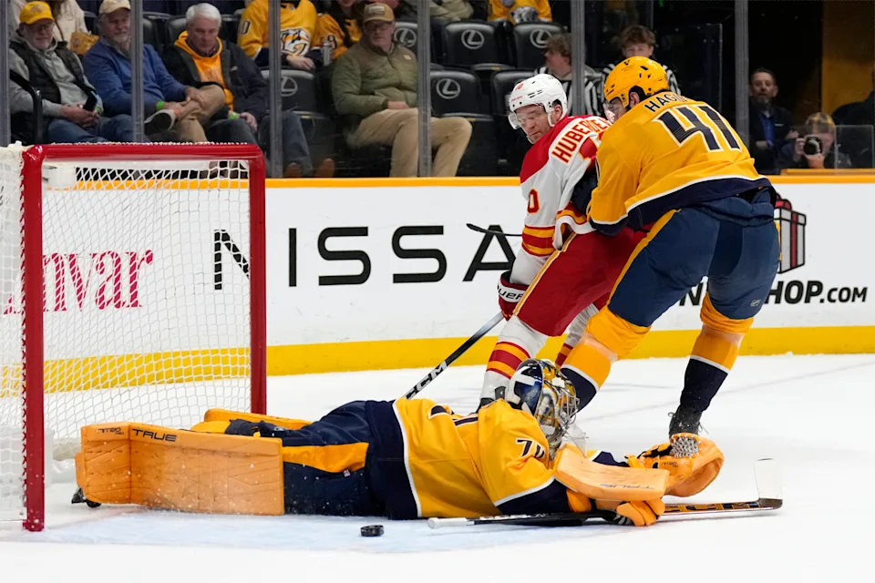

Predators Demolish Flames 5-1 in One-sided Match
By

Nashville Predators crush the Calgary Flames in a one-sided 5–1 victory. From the opening puck drop to the final whistle, the Predators applied relentless pressure, keeping the Flames on the back foot all night. With a blend of experienced veterans and rising rookies, Nashville controlled every corner of the ice at Bridgestone Arena on Tuesday night.
The whistle signals that Nashville predators have an early lead as they score early in the night setting the mood of the game and what's ahead. The rookie Reid Schaefer found an opening in front of the net and scored his first NHL goal, giving the Predators a 1-0 lead. With a lead, the flames were unable to grasp the situation, as the Predators controlled every corner of the ice rink.
In the second period, Veteran players, Steven Stamkos and Jonathan Merchessault were able to score with a tap-in and a straight powerful shot. And just over moments later, rookie Ozzy Wiesblatt also scored his first goal, putting the predators with a 4-0 lead.
Third period and the Predators kept their stance and Juus Saros dominated with his defense, making the Calgary Flames lose more momentum of their cooperation. Michael Bunting tipped another shot making the score 5-0. The Calgary Flames were able to score a goal made by Morgan Frost yet it was too late for comebacks
With unwavering defense from Juus Saros, defending over 27 shots and teamwork of both rookies and veterans, the Nashville Predators dominated the ice rink.